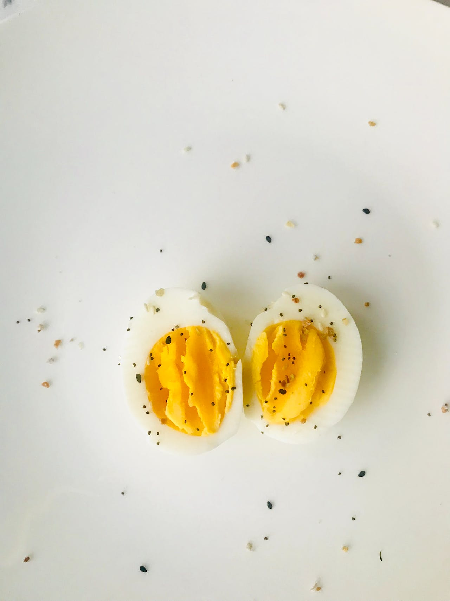

Boiled Eggs Recipe

Description
This method will produce consistent result to the level of doneness you desire no matter what pot you use and how weak or strong your stove is.
Ingredients
- Eggs
- Water
- Spices (optional)
Steps
- Boil water first.
- Gently lower in fridge-cold Eggs.
- Lower the heat slightly.
- Start a timer. 8 minutes for soft,10 minutes for classic hard.
- Transfer into a large bowl or sink of cold water.
- Peel under water starting from the base.